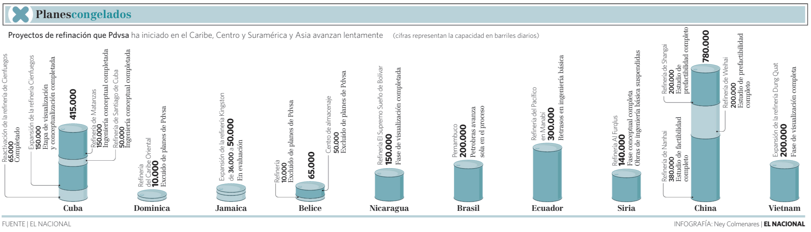

Planes congelados
Editorial Infographic / Energy Data VisualizationContext
This infographic analyzes a series of refinery projects promoted by PDVSA across the Caribbean, Central and South America, and Asia. Many of these projects were announced as part of an international expansion strategy but progressed slowly or remained incomplete.
The objective was to present an overview of these projects and their current status, along with their planned refining capacities.
Challenge
The dataset combined multiple variables: geographic location, refining capacity and project status. The challenge was to compare projects of very different scales while also communicating whether they were completed, delayed or still in early development stages.
Design Approach
The infographic uses a series of cylindrical shapes to represent refining capacity, allowing easy comparison between projects. Each cylinder is accompanied by annotations that describe the development stage of the project, such as conceptual phase, feasibility studies or partial completion.
This approach combines quantitative comparison with qualitative context, making it possible to understand not only the size of each project but also its level of progress.
Information Structure
The layout is organized horizontally, grouping projects by country and allowing direct comparison of refining capacities. Additional annotations provide context about each project's development status, highlighting delays and incomplete execution across the portfolio.
